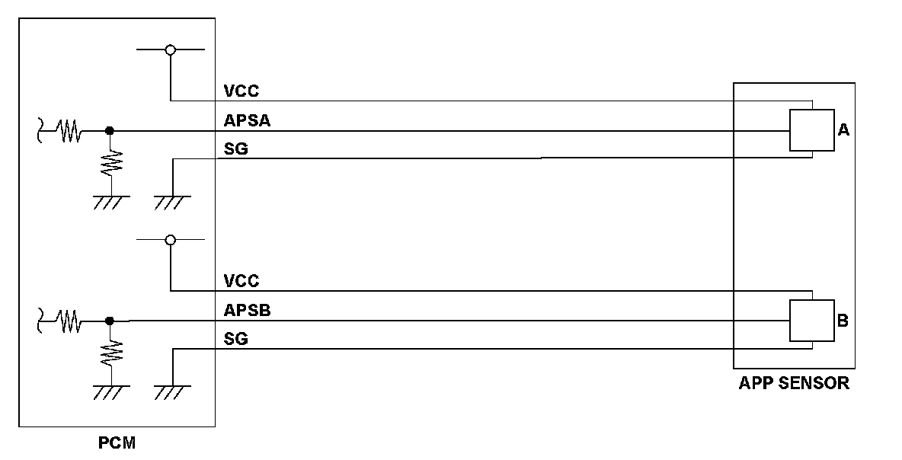
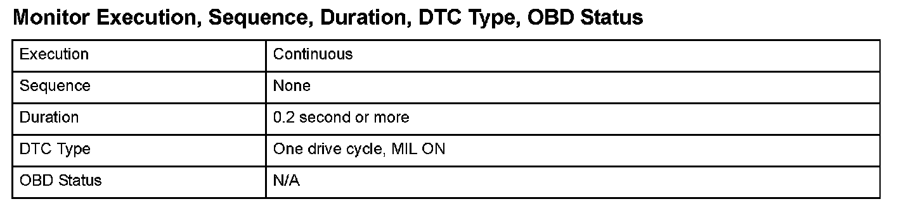

Accelerator Pedal Position (APP) Sensor A (Throttle Position (TP) Sensor D) Circuit High Voltage
DTC P2123: Accelerator Pedal Position (APP) Sensor A (Throttle Position (TP) Sensor D) Circuit High Voltage
General Description
Accelerator pedal position (APP) sensor A is a part of the electronic throttle control system (ETCS), and it is used to convert the position of the accelerator pedal into electrical signals. Based on these signals, the powertrain control module (PCM) controls the throttle actuator so that the throttle position agrees with the accelerator pedal position. If the signal voltage from APP sensor A is a set value or more, the PCM detects a malfunction and stores a DTC.

Monitor Execution, Sequence, Duration, DTC Type, OBD Status

Enable Conditions
Malfunction Threshold
The APP sensor A output voltage is 4.9 V or more for at least 0.2 second.
Diagnosis Details
Conditions for illuminating the MIL
When a malfunction is detected, the MIL comes on and the DTC and the freeze frame data are stored in the PCM memory.
Conditions for clearing the MIL
The MIL will be cleared if the malfunction does not recur during three consecutive trips in which the diagnostic runs.
The MIL, the DTC, and the freeze frame data can be cleared by using the scan tool Clear command or by disconnecting the battery.